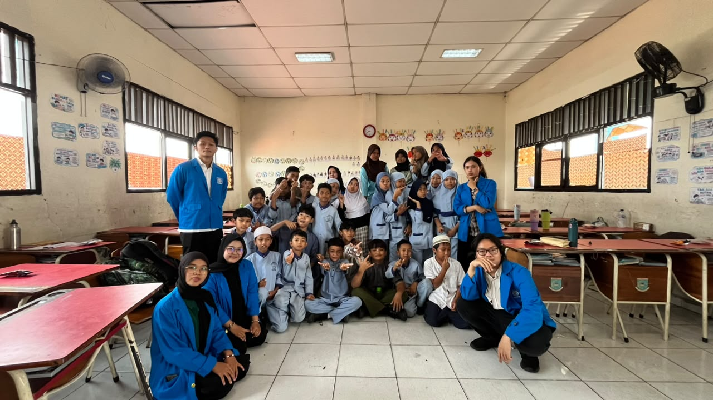

PENGABDIAN KEPADA MASYARAKAT
KAMPUS
Mahasiswa Ilmu Komunikasi UBSI Edukasi Siswa SDN Pamulang Tengah Bermedia Sosial dengan Aman
Edukasi literasi digital untuk 31 siswa kelas 5C membahas privasi, hoaks, dan etika bermedia sosial.